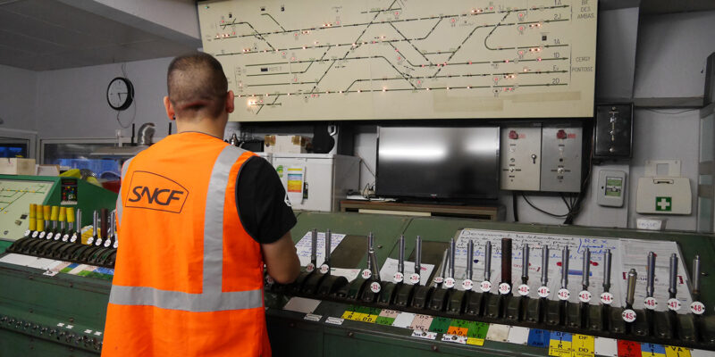

Expériences Professionnelles
-
SANEF
Opérateur Tunnels et Informations Trafic
Senlis (60)
2009-2020
-
SNCF
Aiguilleur
Lens (62), Béthune (62), Pont à Vendin (62)
2007-2008
 -
CFPPA - Lycée Agricole Charles Naveaux
Responsable de formation - Formateur
Sains du Nord (59)
2006-2007
-
Collèges et Lycées divers
Assistant d'éducation
Béthune (62), Norrent Fontes (62)
2006
-
Collège Villars
Enseignant
Denain (59)
2006
-
Arcelor Mittal
Exploitant poches
Dunkerque (59)
1999-2004